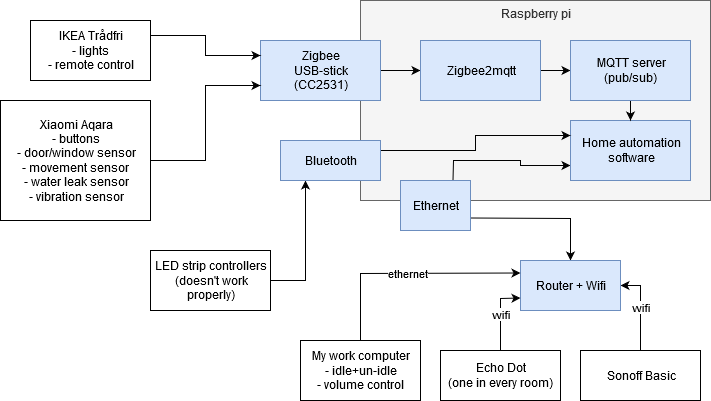
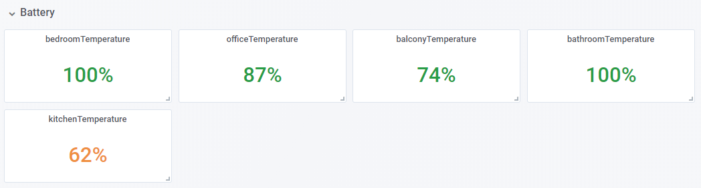
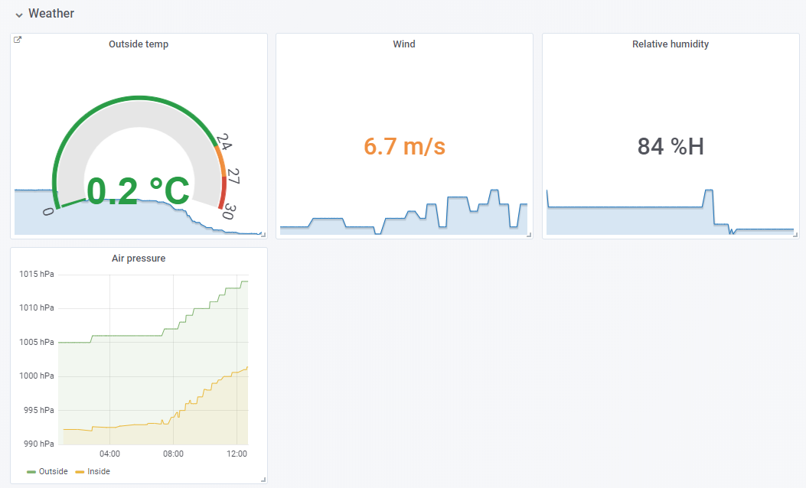
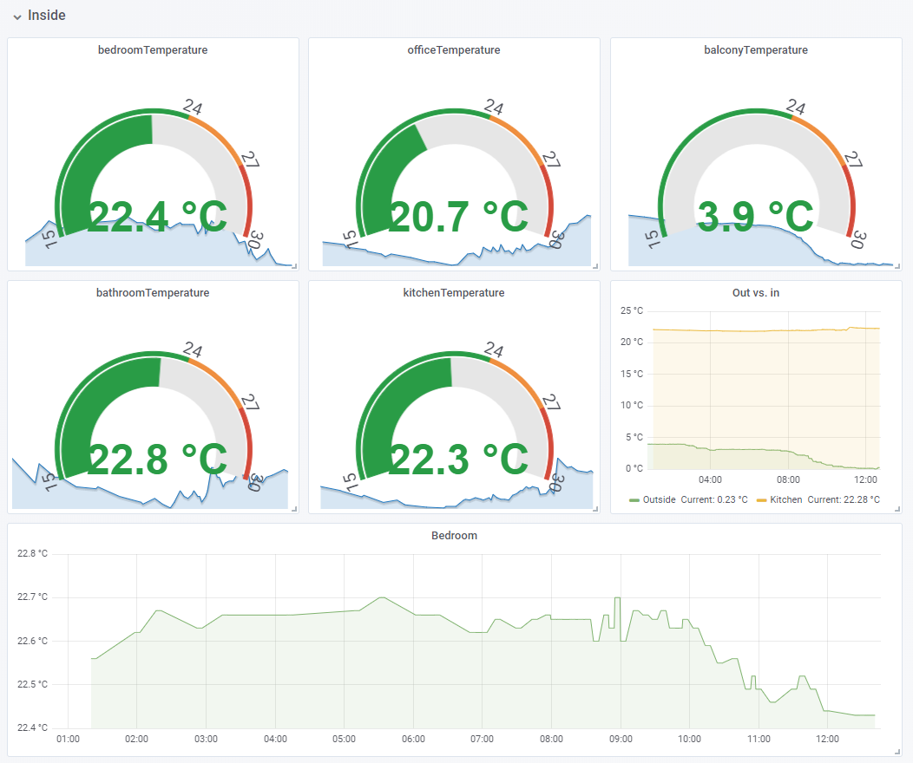

Home automation ideas & my setup
I’ve got so many good automation ideas from other people, so it’s fair that I pay it forward by listing my own automations so other people can get ideas! I also describe my setup, gear and my no-cloud policy etc.
My automations
A lazy dump of my automations:
-
When nobody’s home and I open the apartment door (door/window sensor) and it’s dark, a hallway light turns on.
-
When the last person leaves the apartment, there’s a button next to the apartment door that makes all the lights/devices turn off.
-
When I walk into the kitchen, the bathroom or the bedroom, a light turns on (movement sensor).
-
When I sit in the dinner table, the light above it turns on (the chair has a vibration sensor).
-
When the mail comes, I get a notification (vibration sensor in mailbox hatch).
-
When I sit at my work computer, my work lights turn on and when I leave the computer, they turn off (EventGhost communicates idle + un-idle events to my automation software)
-
I have my own home office and it has a “doorbell” - just a simple button that makes my office lights blink and the music mute for a few seconds (I send event to EventGhost that triggers mute + delay + unmute). Why: I might not hear knocks on the door if I’m listening to music with headphones.
-
When I say
alexa, good nightbedroom lights turn off -
A physical button wired as “last person goes to sleep”, which turns off all devices (but doesn’t set the “nobody’s home” -mode like the apartment door button does).
-
My ceiling fan is automation-controllable because I hacked a Sonoff Basic (wifi-controllable relay) into it.
-
I have a couple of water leak sensors so that I get an alert if there’s a leak.
Most of the rules are only enabled if it’s dark, which is calculated from sun’s angle for this time and location.
Also most of the rules are tied into “somebody’s at home” (a human), so if my dog is home alone and he’s walking, it won’t trigger the lights.
Everything is controllable by:
-
Voice
-
Most (but not all) by a physical switch
-
From smartphone app
My gear
First, a drawing:

I’ve got Amazon Echo Dots in almost every room.
All my lights are IKEA Trådfri (except LED strips). I also have the Trådfri remote which I don’t use to directly control lights, but instead they’re buttons which I can map to anything I want in the software.
All my sensors & most buttons are Xiaomi Aqara - I’ve got:
-
Temperature/humidity/air pressure sensor in every room, also outside
-
Vibration sensor
-
Door/window sensor
-
Physical two-button switch (has single/double/hold/etc. clicks), physical one-button switch (has single/double/etc. clicks)
-
Water leak sensor
I’ve got a couple Sonoff Basics for turning dumb devices (ceiling fan, built-in lights) into smart devices.
I also have bluetooth-based LED light strip controllers, but I can’t recommend them (more of this later).
The automations run locally on a Raspberry Pi 3.
Dashboards
I’ve got dashboards with Prometheus + Grafana from metrics exported by my automation software.
Battery statuses:

Weather data:

Inside temperatures:

No-cloud policy
My smarthome has a no-cloud policy: I don’t want any company:
-
Knowing how I use my devices
-
Setting times when I’m forced to update software/firmware
-
Deciding when my devices stop working
-
Having possibly insecure/unpatched devices being connected to internet
-
Having proprietary software controlling my devices
-
Having their cloud (or my internet) go down affect my smart home
How?
-
I run all the smarts locally - none of the devices connect to internet
- With the exception of Echo Dots - Amazon can only mine my voice commands but not any other automations.
-
I don’t use any official (IKEA, Xiaomi) Zigbee gateways, but instead for Zigbee comms I use CC2531 and Zigbee2mqtt to bridge the devices into my Home Automation software.
-
I wrote my own home automation software, called Hautomo, but you certainly don’t have to - Home Assistant is open source, free and can run locally.
Am I happy with the gear?
Everything pretty much works, except the bluetooth-based LED light strip controllers. They have connectivity problems a couple times a month where the device stops being able to be controlled for like 5 minutes. I need to replace these when I get the time.
All my Zigbee gear (Xiaomi Aqara, IKEA Trådfri) and wifi gear (Sonoff Basic) mostly works perfectly.
I’ve had a couple issues where one of the Aqara movement sensors seems to disconnect from the network and it comes itself back within a couple of days - but that’s happened 2-3 times a year. I wish to investigate this, because it’s annoying - but it’s not a show-stopper.
Overall, I’m happy and can recommend most of my setup.
Roadmap
I wish to get a vacuum robot, but I need to research one with good features/price and one that is compatible with my no-cloud policy and preferably open source.
Maybe get a security camera at the apartment door.
Make a classy looking smart mirror.
Links to YouTube
-
The Hook Up - great Smart Home channel
-
Paul Hibbert - great Smart Home channel
-
Vacuum Wars - channel dedicated to vacuum robots

Thanks for reading! 😍
If you like my writing, consider following me on Twitter.
Stay updated on my blog posts & projects - sign up for
my newsletter. 🚀
No spam, unsubscribe any time.
RSS also available.